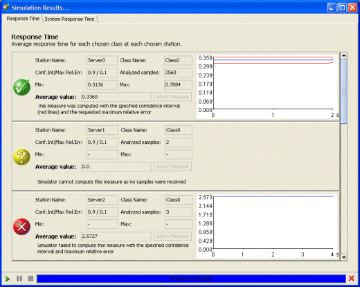

Simulation Results
__________
When a simulation terminates successfully, performance indices are plotted on tabbed windows, as illustrated below.

In each window, results for all the stations for which the performance index is specified are listed. Numerical values and graphs are given.
Successful results are indicated by a checkmark sign on a green bullet.
In case of errors or of early termination, a cross on a red bullet indicates that the results obtained are not within the requested confidence interval.
In case of sintactically correct components that make no sense from a modeling point of view, e.g., a station that is never visited by any customer, a question mark on a yellow bullet indicates that the simulator could not compute the index for lack of measurements.
Values are available for:
Station Name: This is the name of the station for which the index is computed.
Class Name: This is the name of the class for which the index is computed at the station (it could be "All", to mean All Classes).
Conf.In / Max Rel.Err.: This is the Confidence Interval and Maximum Relative Error of the computed index.
Analyzed Samples: This is the number of samples used to compute the performance index.
Min.: This is the minimum value observed for the index.
Max.: This is the maximum value observed for the index.
Average Value: This is the computed average value of the index, usually the value of greater interest.